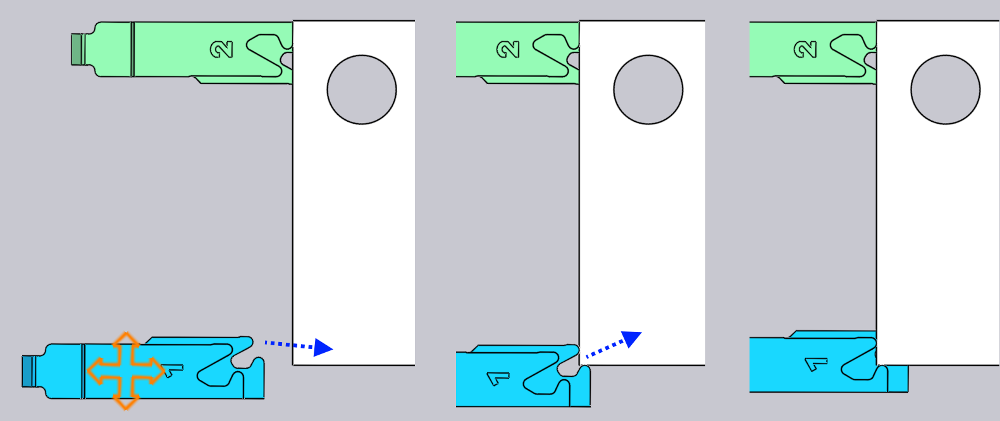

Editar los dedos de tope
Las posiciones de los dedos de tope para cada plegado pueden ajustarse con solo hacer clic en el dedo de tope — esto abre el panel Tope, que se muestra al lado.
El panel Tope

-
Utilice el selector Gauge para seleccionar el tope que desea editar (también pueden hacer clic en el tope, y se mostrará el panel para editar ese tope). Si hace clic en el otro tope con Shift+Click, puede editar los ajustes comunes de ambos topes juntos.
-
Las entradas Z, X y R se utilizan para ajustar la posición de los topes en tres dimensiones. Para la mayoría de las prensas plegadoras, los ejes son los indicados en la imagen a continuación:[1]

-
El selector Surface se utiliza para enclavar una superficie diferente del dedo de tope con la pieza. El conjunto de superficies disponibles depende de la máquina, y no todas las superficies pueden ser aplicables para todos los plegados (TecZone Bend le informará cuando no se puede usar una superficie en particular). La imagen de abajo muestra diferentes superficies que se están utilizando:

-
El ajuste Retract se utiliza para establecer la distancia de retracción del tope antes del plegado. Para algunos plegados, el tope debe retraerse (en la dirección +X) a cierta distancia después de que la pieza sea sujetada por el punzón, pero antes de que sea plegada (para evitar una colisión). Este ajuste se utiliza para controlar la distancia de retracción. Cuando edita esto, TecZone Bend retrae el tope en la cantidad especificada como vista previa, para que pueda juzgar si la retracción es suficiente.
-
Utilice el botón Auto-Place para pedir a TecZone Bend que calcule una posición automáticamente para el tope especificado. En general, TecZone Bend tendrá múltiples posibilidades de calibración y al hacer clic repetidamente en el botón de colocación automática (Auto-Place) se recorrerán todas esas posibilidades. Para volver al ajuste predeterminado, cierre el panel de topes, haga clic de nuevo en el tope y, a continuación, haga clic en Colocar automáticamente: la primera posición seleccionada será la predeterminada (que también sería el resultado de la secuenciación automática y los útiles originales).
-
Utilice el botón Flip Part para insertar el otro lado de la pieza en la máquina y calcular el tope de nuevo. Esto es similar al botón Voltear pieza en el panel de plegado.
-
Utilice los botones Prev y Next para ir al plegado anterior o siguiente y para editar las posiciones del tope de ese plegado.
Avanzado
Aquí hay algunas operaciones más avanzadas con los topes:
Edición de topes para múltiples plegados
Es posible editar las posiciones de tope para múltiples plegados al mismo tiempo.Para hacerlo, primero seleccione múltiples plegados mediante Shift+Clic en los números de plegado en el Bend Navigator. A continuación, haga clic en un tope. La imagen adjunta muestra las posiciones del tope para los plegados 1, 2 y 4 que se están editando juntos:

En este ejemplo, todos los plegados usan la misma posición Z para el tope, y la edición de esta posición ajustará la posición Z para todos los topes. Los valores de posición X y R están en blanco, ya que son diferentes para cada plegado. No obstante, puede escribir un valor X o R y se aplicará para todos los plegados.En general, rara vez necesitará usar esta funcionalidad. El panel de topes conoce las limitaciones de una prensa plegadora concreta y aplicará todas las restricciones necesarias. Por ejemplo, las posiciones R de los dos topes deben ser las mismas para algunas máquinas (no tienen ejes R1 y R2 independientes) - TecZone Bend garantizará que cuando edite la posición R para un tope, el otro también se ajuste inmediatamente al seguimiento.Para algunas máquinas con sistemas de topes de 2 ejes, las posiciones Z de los topes se configuran manualmente y, por lo general, no cambian de plegado a plegado (ya que implicaría que el operador tuviera que ajustar manualmente los topes después de cada plegado).Para tales máquinas, cuando la posición Z se establece para un plegado, se establece en la misma para todos los plegados. El estado de colisión, el estado de tope enclavado, etc., se calculan para todos los plegados inmediatamente, por lo que es muy fácil encontrar posiciones comunes Z1 y Z2 que pueden ser aceptable para todos los plegados.
Topes de arrastre
Aunque las posiciones exactas de los topes se pueden establecer escribiendo los valores Z, X y R, a menudo es más simple colocar los topes simplemente arrastrándolos en contacto con la pieza.
-
Haga clic una vez para seleccionar el tope que desea arrastrar.
-
Haga clic en el tope seleccionado y arrástrelo para colocarlo. Dependiendo del punto de vista, el tope se arrastra a lo largo de un plano horizontal o vertical.Por lo general, se comienza con el tope alejado de la pieza y se arrastra hacia la pieza hasta que la toca. Puede continuar arrastrando más (empujando el tope en la pieza), y una estructura de alambre continuará moviéndose, pero el tope real se detiene cuando toca la pieza.

La imagen de arriba muestra esto en funcionamiento — comenzamos a arrastrar el tope hacia la chapa en la dirección indicada por la flecha. Tan pronto como el tope toque la chapa, se detiene y solo una representación de estructura de alambre continúa moviéndose (para mostrarle dónde está intentando arrastrar el tope). Esto facilita la colocación del tope de forma que quede en contacto con la pieza sin dejar espacios ni provocar colisiones.En esta imagen de arriba, estamos mirando el tope desde un punto de vista que está cerca de arriba hacia abajo. Por lo tanto, el tope se mueve en el plano XZ y el valor R del tope se mantiene constante. Si gira la vista a un extremo más visible, el tope se moverá en el plano XR, y el valor Z será constante.
Bloqueos por sujeción al arrastrar
Al arrastrar el tope, es fácil posicionar con precisión los topes cuando se utiliza una de las superficies de tipo Stop. Cuando se utiliza una de las superficies de tipo
Pinza, esto resulta más difícil, ya que es necesario que ambas superficies del dedo de sujeción se enganchen con la pieza.TecZone Bend facilita esto al proporcionar bloqueos automáticos cuando el tope está cerca de una posible posición de sujeción. Para utilizar este mecanismo, primero gire la vista de modo que vea los topes desde arriba hacia abajo. A continuación, arrastre los topes de modo que la esquina que desea sujetar quede cerca de la abertura de los dedos:

La imagen de arriba muestra una operación de sujeción en curso. A medida que arrastramos los topes cerca de una posición de sujeción, se enganchan en la posición de la sujeción 1 (véase la imagen de arriba en el centro). Arrastrando aún más, los topes se enganchan en la posición de sujeción 2 (véase la imagen de arriba a la derecha). Tenga en cuenta que el valor R del tope se ajusta automáticamente hacia arriba o hacia abajo a medida que avanzamos a estos diferentes bloqueos de presión.